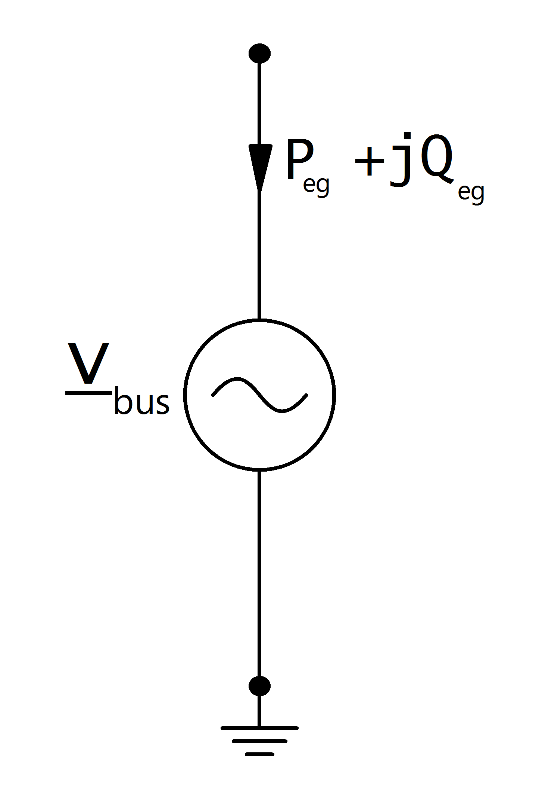

Внешняя сеть¶
Примечание
Внешняя сеть ведёт себя аналогично генератору. Положительное значение мощности означает выдачу от внешней сети в текущую сеть, а отрицательное занечение мощности означает потребление её внешней сетью
См.также
Входные параметры¶
net.ext_grid
Параметр |
Тип данных |
Диапазон значений |
Описание |
name |
string |
Имя внешней сети |
|
bus* |
integer |
Индекс подключенной шины |
|
vm_pu* |
float |
\(>\) 0 |
Напряжение, о.е. |
va_degree* |
float |
Угол напряжения, гр. |
|
max_p_mw** |
float |
Магсимальная активная мощность |
|
min_p_mw** |
float |
Минимальная активная мощность |
|
max_q_mvar** |
float |
Максимальная реактивная мощность |
|
min_q_mvar** |
float |
Минимальная реактивная мощность |
|
s_sc_max_mva*** |
float |
\(>\) 0 |
Мощность короткого замыкания в максимальном режиме, МВА |
s_sc_min_mva*** |
float |
\(>\) 0 |
Мощность короткого замыкания в минимальном режиме, МВА |
rx_max*** |
float |
0…1 |
Отношение внутренних сопротивлений внешней сети R/X в максимальном режиме |
rx_min*** |
float |
0…1 |
Отношение внутренних сопротивлений внешней сети R/X в минимальном режиме |
in_service* |
boolean |
True / False |
Внешняя сеть используется в расчётах, да/нет |
*используется для расчёта установившегося потока мощности
**используется для расчёта оптимальных потоков мощности
***используется для расчёта токов короткого замыкания
Электрическая модель¶
Внешняя сеть моделируется как источник напряжения и ведёт себя как узел резервирования мощности:
{kind=link}
with:
Результирующие параметры¶
net.res_ext_grid
Параметр |
Тип данных |
Описание |
p_mw |
float |
активная мощность внешней сети [МВт] |
q_mvar |
float |
реактивная мощность внешней сети [МВар] |
Выдача или потребление активной и реактивной мощности в узле резервирования мощности является результатом расчёта перетока мощности: